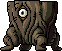

Lv. 10 · #1110101
다크 스텀프
스텀프보다 색이 좀 더 진한 그루터기 형태의 몬스터이다. 고원 지방에서 흔히 발견된다. 스텀프와 별다를 바 없이 말라붙은 모습이지만 몸 속 어딘가에 아직도 물기가 남아있는 나뭇잎을 감추고 있다. 스텀프에 비해 공격력과 방어력이 훨씬 강력하니 초보자라면 혼동하지 말도록 하자.
스탯
레벨 10- HP
- 250
- MP
- 10
- EXP
- 18
- 넉백 가능 데미지
- 1+
- 물리 데미지
- 65
- 마법 데미지
- 0
- 물리 방어력
- 20
- 마법 방어력
- 10
- 속도
- -70
- 10레벨 에서의 필요 명중
- 0
- 메소
- 75.0
- 속성관계
- 불속성약점
- 체경비
- 13.89
- 형태
- 식물형
출현 지역
출현 맵 22개메이플노트 목록 분류
빅토리아 / 엘린숲
출현 맵
맵 이름을 누르면 메이플노트의 맵 정보가 열립니다.
드롭 테이블
전체 22개| 아이템 | 아이템 ID | 드롭 확률 |
|---|---|---|
| 나뭇잎 | 4000005 | 40% |
| 바짝 마른 나뭇가지 | 4031773 | 20% |
| 빨간 포션 | 2000000 | 2% |
| 파란 포션 | 2000003 | 2% |
| 주황 포션 | 2000001 | 2% |
| 석궁전용 화살 | 2061000 | 0.8% |
| 활전용 화살 | 2060000 | 0.8% |
| 강철의 원석 | 4010001 | 0.3% |
| 바둑판 | 4030009 | 0.3% |
| 가넷의 원석 | 4020000 | 0.2% |
| 폴암 | 1442000 | 0.1% |
| 사각 나무 방패 | 1092003 | 0.1% |
| 브론즈 캡 | 1002039 | 0.06% |
| 옐로우 아벨린 치마 | 1061057 | 0.01% |
| 옐로우 아벨린 | 1041061 | 0.01% |
| 나무 스태프 | 1382000 | 0.01% |
| 쿠크리 | 1302006 | 0.01% |
| 그린 아리안느 치마 | 1061013 | 0.008% |
| 그린 아리안느 | 1041018 | 0.008% |
| 한쪽 은 귀고리 | 1032001 | 0.006% |
| 장갑 민첩 주문서 10% | 2040802 | 0.006% |
| 브라운 래거 캡 | 1002613 | 0.001% |
조건에 맞는 드롭 아이템이 없습니다.
확률은 메이플노트에 게시된 값입니다. 아이템 이름을 누르면 원본 아이템 정보가 열립니다. 과거 버전 데이터이므로 실제 메이플랜드와 다를 수 있습니다.